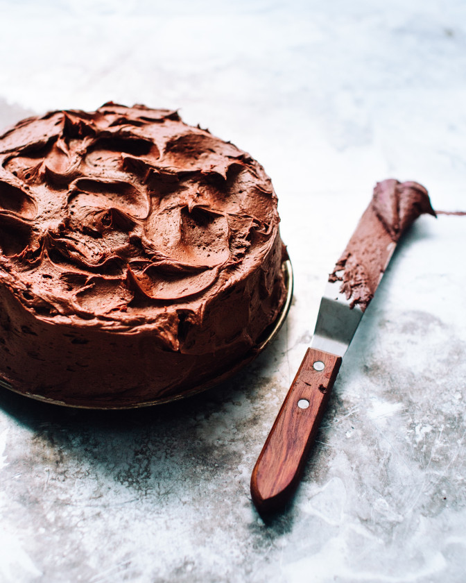

Simplicity Chocolate Cake
Description
Simplicity chocolate cake is incredibly easy to make and bake. It's perfect for birthdays, special occasions, or just as a great dessert.
Ingredients
- 1/2 cup butter
- 1 cup sugar
- 1 cup self-raising flour
- 1/2 cup milk
- 2 eggs
- 2
Tb cocoa - 1/2 tsp. vanilla essence
Steps
- Prepare a moderate oven to 350°F or 180°C.
- Grease a 16 1/2
cm deep round tin. - Line base of tin with a round of greaseproof or greased brown paper.
- Sift flour and cocoa into a mixing bowl, then add sugar, eggs, milk, and essence.
- Melt the butter over gentle heat.
- Pour butter into mixing bowl and beat hard for 3 minutes.
- Pour mixing bowl into tin and bake for 1 hour or until cooked.
- Cool on a cake cooler.
- Once cake is cold, ice as desired.